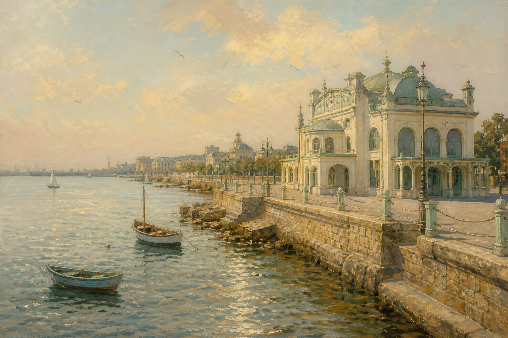

The sea
Marea. Not the river story. The open Black Sea, salt in the wind, and the short Romanian coast people still mean when they say la mare — to the sea.

The eastern edge
Most of the country turns inland. Mountains, maize, a yard, a river with a name. Then the land simply stops. The mare, the sea, is the eastern edge: not a valley, not a ford, not the Danube’s last reeds. Open water. A different smell. A wind that does not come off a ridge. The Romanian shore is short. Sand, a stone wall, a working port, and behind all of it the Dobruja steppe, dry and bright. The rivers page ends where the Delta meets salt. This page starts there. What still lives in those reeds is on wildlife. Out here the water is the Black Sea, and it does not care about the creek that fills a bucket in the hills.
The window
Constanța is how most people reach it. Tomis was the old name. The city history — the Greeks, the exile, the Ottoman harbor, the year the coast became Romanian — sits on the Constanța lesson. This page is the window as it is used. The port is work: cranes, rails, a smell of fuel, shifts that do not follow the beach calendar. The promenade is the public face, a walk over the wall with a pale pavilion behind you and boats below. North of the city people say Mamaia when they mean the summer strip: a long plajă, the beach, a lake on one side and the sea on the other. They do not dress it up. They say Mamaia, or simply la mare. South the coast continues toward Mangalia. The names change. The salt does not.
Day to day
In July the trains and buses fill. Families from inland cities bring bags, a child who has been promised the water, and a week in a rented room. The plajă is crowded. The water is the point. A stall still sells fish on ice, and something fried in paper that you eat standing. In winter the same promenade empties. Wind, a closed kiosk, a walker in a coat. The sea does not leave. The holiday does. Inland from the wall the Dobruja stays steppe: light, dust, a sky with no ridge to stop it. Harbor families keep the year by the port, not by the beach season. That is the ordinary split: one water, two calendars.
A small blue corner
On the maps plate the sea is a small blue corner. It is still the country’s only salt horizon. You do not need a list of resorts. You need the habit of asking whether a story is standing by a river or by the mare — and if it is the mare, whether it is the crane, the promenade, or the week in Mamaia that someone still talks about in January.